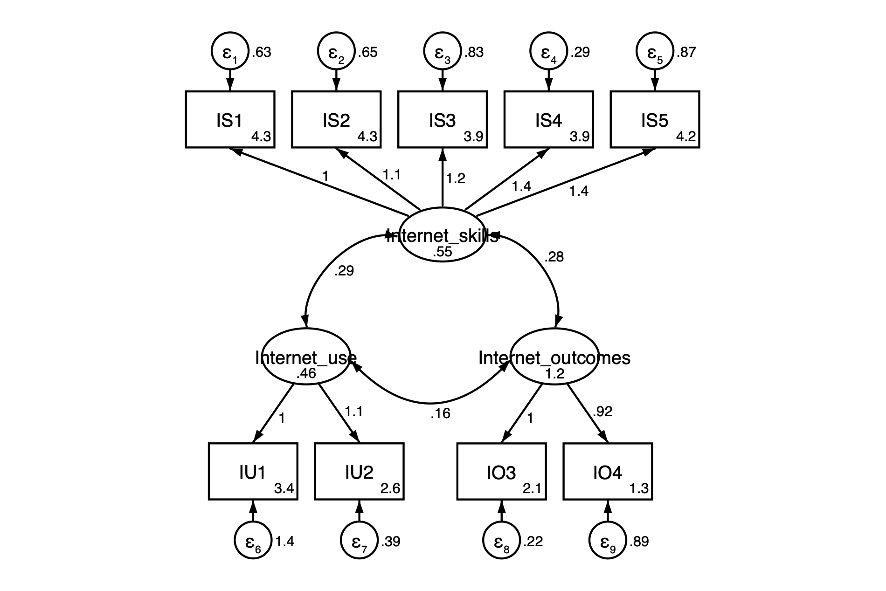
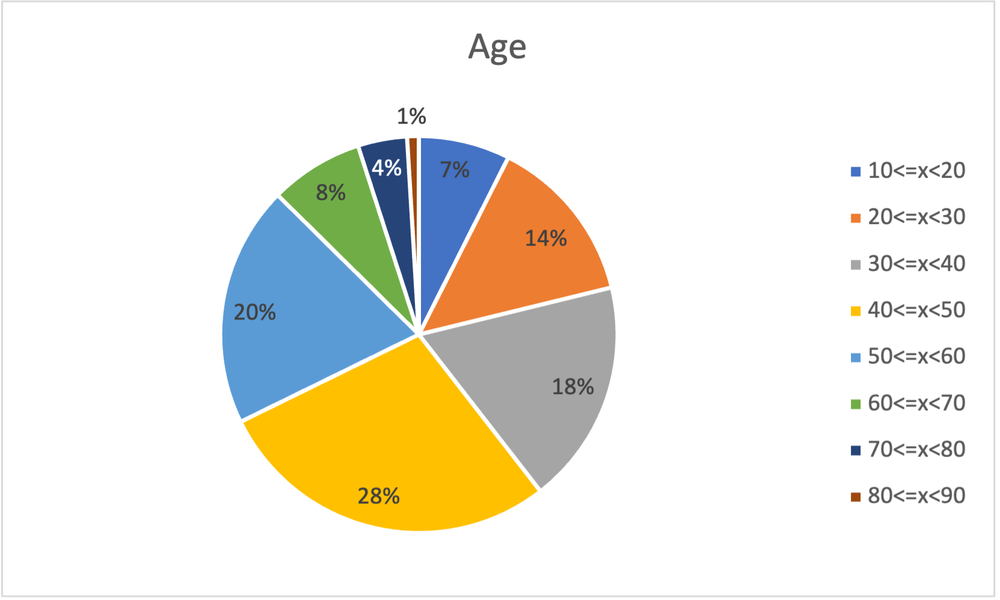
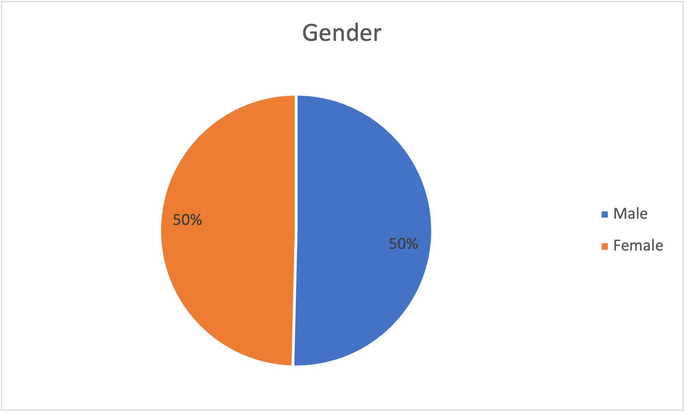
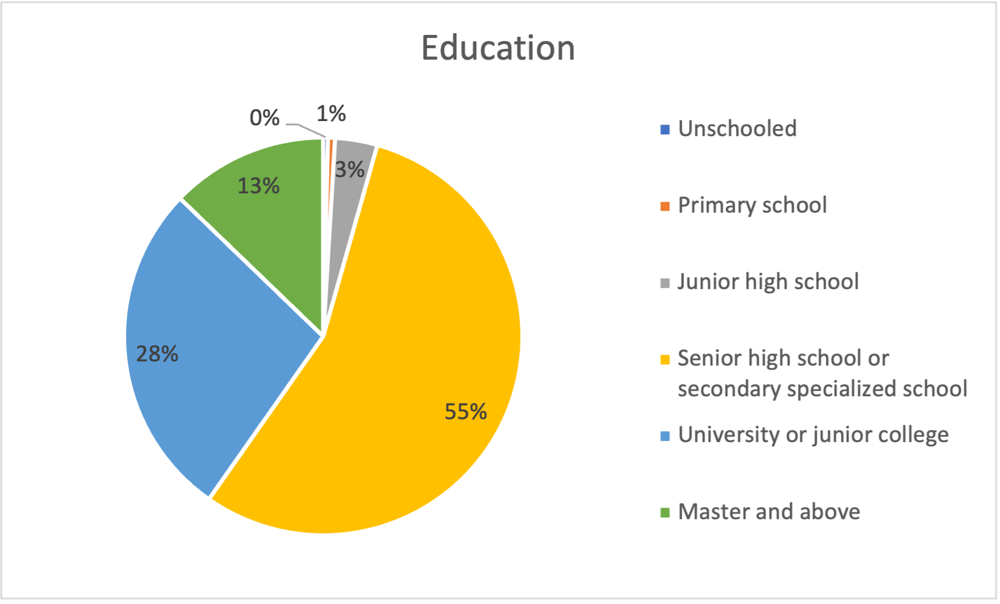
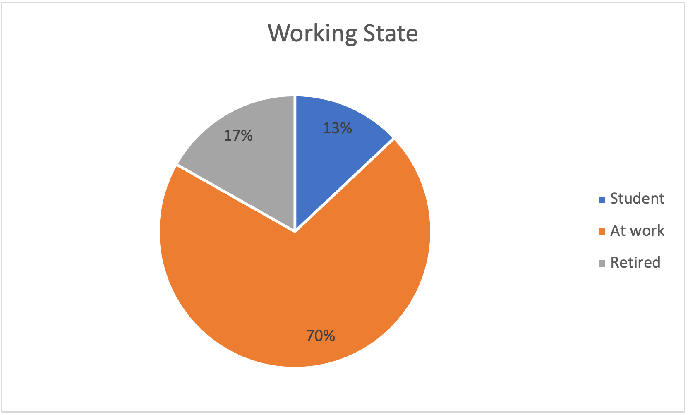
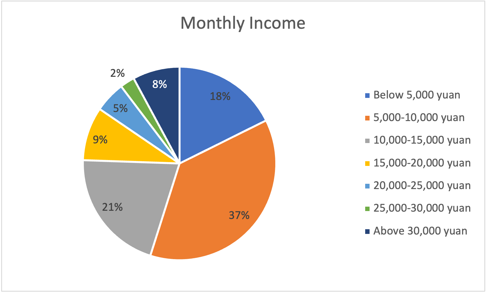
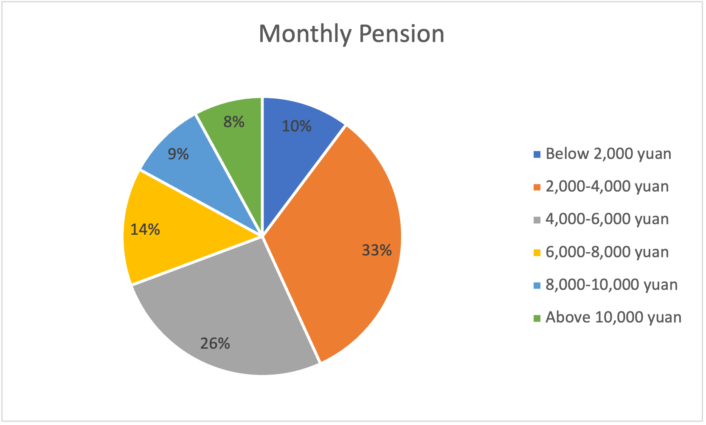

How Age Affects the Second- and Third-Level Digital Divide: A Research Based on a Questionnaire-Based Survey
Shangyi ZhongThe High School Affiliated to Renmin University of China
Yuanpei Young Scholars
Xinglong Du
3/5/2023
Abstract
This questionnaire-based survey investigates the role of age in affecting the extent of the second- and third-level digital divide. Using an original questionnaire, the author collects 524 valid samples from all over China. With the extreme grouping method, total analysis, exploratory factor analysis (EFA), and confirmatory factor analysis (CFA), the validity of the items in the questionnaire is confirmed. Then, regression analysis and the intermediary effect analysis conclude that age is positively correlated with the extent of the second- and third-level digital divide. After that, the intermediary effect analysis identifies three intermediary variables: learning ability, interest in digital devices, and how sufficient people think their digital competence is.
Keywords: digital divide, age, questionnaire-based survey, regression analysis, intermediary effect analysis.
1. Introduction
The digital divide is now widely accepted as the gaps between differences in Internet access, Internet skills, and Internet outcomes. A great number of studies have been conducted to define the concept of the digital divide, to find the determinants of the digital divide, and to standardize terminologies.
Even with so many studies being done on the digital divide, there are still some limitations in past research. Firstly, although the digital divide is divided into three levels, the third level, the differences in Internet outcomes, is rarely studied. Secondly, most research doesn’t focus on a single determinant of the digital divide, failing to explain the mechanism behind it. Lastly, most research is done in developed countries including the United States and the Netherlands, but the validity of the theories in developing countries has not been verified. Therefore, research focusing on how a single factor affects the second- and third-level digital divide in a developing country is essential to conduct.
Therefore, to bring forth new ideas based on past research, this article proposes and answers the following question: does age affect the second- and third-level digital divide, and how does age affect the second- and third-level digital divide? To answer this question, the author strives to (1) examine how age is correlated with the extent of the second- and third-level digital divide, (2) study how some variables are functioning as intermediary variables between age and the extent of the second- and third-level digital divide.
The article starts with a literature review, which introduces past research focusing on the concepts and determinants of the digital divide, followed by an explanation of the methodology being applied, and the result obtained. Finally, the conclusion and limitations of the study will be discussed.
2. Literature Review
2.1. The Definition of the Digital Divide: From Internet Access to Skills to Outcomes.
The digital divide became a topic of interest in 1995 when the National Telecommunications & Information Administration published the report “Falling Through the Net: A Survey of the Have Nots in Rural and Urban America”. It was first defined as “the separation between those who have access to digital information and communications technology (ICT) and those who do not (Dewan & Riggins, 2005)”. Based on this definition, Dewan & Riggins considered the digital divide in three different levels, which are individual, organizational, and global.
As people more heavily depended on ICT and with strong support from the government, the Internet has developed rapidly since the 1990s and the share of the Internet population in the United States soon exceeded 50% by the beginning of the twenty-first century. As a result, some scholars pointed out that the distinction between those who have access to the Internet and those who don’t was no longer the only manifestation of the digital divide, and that the differences in people’s online skills should be taken into account (Hargittai, 2002). This was labeled the second-level digital divide while to make it easier to identify, the original definition of the digital divide was named the first-level digital divide. Internet use was later added to the concept of the second-level digital divide, which included the frequency and variety of Internet use (Scheerder et al., 2017).
With the deepening of the research, several researchers argued that in terms of the digital divide, the difference in the content which people create, also referred to as Internet outcomes, should be taken into account (Fuchs, 2009; Selwyn, 2004). This perspective of the digital divide was later named the third-level digital divide (Wei et al., 2011).
As the digital divide became no longer a binary but a comprehensive problem, researchers suggested that it is more appropriate to use the word “digital inequality” instead of “digital divide” (DiMaggio & Hargittai, 2001; Wei, 2012).
2.2. Determinants of the Digital Divide
Since the digital divide was first defined as the divide between haves and have-nots in Internet access, early research discussed various determinants based on how they affect Internet access. In a comprehensive analysis, the author summed up past research on the determinants of the digital divide in three levels including individual, organizational, and global. At the individual level, the most significant factors include income, location, race, age, and education (Hoffman, 1998). When it comes to the organizational level, the article suggests that, in past research, external pressure, organizational readiness, perceived benefits, federal grant, and demographic ethnicity are responsible for the first-level digital divide (Iacovou et al., 1995; Azari & Pick, 2005). At the global level, the determinants of the first-level digital divide include human capacity, trading with OCED, property rights, the manufacturing share of the economy, infrastructure, wealth, and telecommunication policy (Caselli & Coleman, 2001; Quibria et al., 2003; Hargittai, 1999).
After the concept of the second- and third-level digital divide was proposed, other researchers did a systematic review of the determinants of the second and third-level digital divide. It is worth noticing that the second-level digital divide was divided into Internet skills and Internet uses, while the third-level digital divide remained to be Internet outcomes. The article examined the English-language academic digital divide literature between 2011 and 2016. The author divided the determinants of the digital divide into seven categories: sociodemographic, economic, social, cultural, personal, material, and motivational. As a result, the article suggested that the third-level digital divide has not been thoroughly studied, and the most commonly studied types of determinants that contribute to Internet skills and uses are sociodemographic and economic, while motivational factors are the most studied type of determinants in terms of Internet outcomes (Scheerder et al., 2017).
3. Methodology
3.1. The Design of the Questionnaire
The questionnaire includes three types of questions: completion, multiple choice, and scale. The questionnaire consists of 28 questions, including 11 6-point Likert scale items.
Question 1 asks the subjects to write down the year in which they were born, providing information about the independent variable, age. Questions 2-7 explore the control variables of the subject, which are gender, level of education, whether at work, and income. For question 4 (“What is your working state”), there are three choices, including “still a student”, “at work”, and “retired”. If the subject chooses the first choice, the questionnaire will redirect the subject to question 5, asking about the average monthly income of their parents. If the subject chooses the second choice, the questionnaire will redirect the subject to question 6, which writes “What is your monthly income?” Finally, if the subject chooses the last choice, the questionnaire will redirect the subject to question 7, which is “What is your monthly pension”. Question 8 (“Please choose 3 for this question”) is an attention screening question. If the subject doesn’t follow the question's instructions and chooses a number other than 3, the questionnaire will be voided. Questions 9-10 ask the subject to what extent they trust and are willing to use electronic devices. To include as many contributors to the digital divide as possible, the questionnaire borrowed the categorization of the determinants of the digital divide from past researchers (Scheerder et al., 2017). In the systematic review, the authors summed up the most commonly-agreed determinants of the second- and third-level digital divide and put them into five categories, which are sociodemographic, economic, social, cultural, personal, material, and motivational. Among the five categories, sociodemographic, economic, and motivational are the only three that account for more than 10% of all studies. To make it possible to answer questions that provide information in the sociodemographic category questions 1-3 were addressed. As for the economic category and the motivational category, questions 4-7 and questions 9-10 were proposed. With questions 1-10 (except question 5 and question 8) all regarding the independent and controlled variables, all of them have corresponding variable names. The detailed questions 1-10 (except question 5 and question 8) and their variable names are shown in Table 1.
Table 1Questions 1-10 (except question 4 and question 8) and their corresponding variable names
| Question No. | Question | Variable name |
|---|---|---|
| 1 | In which year were you born? | Age |
| 2 | What is your gender? | Gender |
| 3 | What is your education level? | Education |
| 5 | What is your parents’ average monthly income? | Parents’ income |
| 6 | What is your average monthly income? | Average income |
| 7 | What is your average monthly pension? | Pension |
| 9 | Do much do you trust electronic devices? | Trust |
| 10 | How willing are you to use electronic devices? | Willingness |
Questions 11-21 are about the extent of the second- and third-level digital divide, presented with 6-point Likert scales. Adopted from Scheerder (Scheerder et al., 2017), the author separated the second-level digital divide into the differences in Internet skills and use, and left the third-level digital divide to be the gap in Internet outcomes. The detailed items are shown in Table 2.
Table 2Items and their item code
| Items | Item code |
|---|---|
| How many functions do you know about social media such as WeChat and TikTok? | IS1 |
| How good are you at distinguishing the authenticity of information? | IS2 |
| What is the complexity of your website password? | IS3 |
| How would you evaluate your Internet skills? | IS4 |
| How would your family evaluate your Internet skills? | IS5 |
| How long do you use your mobile phone every day? | IU1 |
| How many kinds of applications do you open almost every day? | IU2 |
| How frequently do you post WeChat moments, comments, and bullet screens? | IO1 |
| How many likes do your WeChat moments, comments, and bullet screens get? | IO2 |
| How frequently do you post videos and articles? | IO3 |
| How many likes do your videos and articles get? | IO4 |
Finally, questions 22-28 strive to collect data regarding the possible intermediary variables. After open interviews with people from different age groups, the author came up with six possible-intermediary variables including learning ability, degree of myopia, degree of presbyopia, interest in digital devices, how sufficient they think their Internet competence is, and how many years they have used their mobile phones.
Note. IS stands for Internet skills, IU stands for Internet use, and IO stands for Internet outcomes. The factors will be confirmed in the CFA3.2. Extreme Grouping Method
The extreme grouping method is used to see whether an item can effectively distinguish between the group with the higher overall score and the group with the lower overall score or not. In other words, if the person with a higher score for a certain question is a lot more likely to get a better overall score, it means that this question is discriminative. The results can be seen in Table 3. With Sig. (2-tailed) of every item is less than 0.05, all the items are discriminative and would be kept in this standard.
Table 3Results of the Extreme Grouping Method
| Item code | Sig. (2-tailed) |
|---|---|
| IS1 | .000 |
| IS2 | .000 |
| IS3 | .000 |
| IS4 | .000 |
| IS5 | .000 |
| IU1 | .000 |
| IU2 | .000 |
| IO1 | .000 |
| IO2 | .000 |
| IO3 | .000 |
| IO4 | .000 |
3.3. Total Analysis
Another method of examining the discrimination power is the total analysis approach. By relating the question’s score with the total score, the total analysis approach presents the Pearson correlation coefficient which shows the discrimination power of the question. The results can be seen in Table 4. Usually, when the Pearson correlation coefficient with the total score of certain items is greater than 0.3, it means that the item is valid and will be kept. In this circumstance, all eleven items are valid and will be kept.
Table 4Results of the Total Analysis
| Item code | Pearson correlation coefficient with the total score |
|---|---|
| IS1 | .687 |
| IS2 | .657 |
| IS3 | .646 |
| IS4 | .783 |
| IS5 | .743 |
| IU1 | .441 |
| IU2 | .537 |
| IO1 | .604 |
| IO2 | .532 |
| IO3 | .596 |
| IO4 | .571 |
3.4. Exploratory Factor Analysis (EFA)
After confirming that all the items were indeed discriminative, the author import the data into StataMP 17.0 to carry out the EFA. As a result, the p-value from the Bartlett test of sphericity is 0.000 and KMO equals 0.818. Normally, the data is suitable for carrying out the EFA when the p-value is less than 0.05 and KMO is greater than 0.6. Using paralleled analysis (PA), three factors were obtained, which had Eigenvalues > 1. The three factors were named as follows: Factor 1: Internet skills (IS1-5) with five items with a factor loading from 0.7331 to 0.8717. Factor 2: Internet uses (IU1-2) with two items with a factor loading from 0.7181 to 0.8187. Factor 3: Internet outcomes (IO1-4) with four items with a factor loading from 0.6241 to 0.8387.
| Item code | Factor 1 | Factor 2 | Factor 3 |
|---|---|---|---|
| IS1 | .7522 | ||
| IS2 | .7849 | ||
| IS3 | .7331 | ||
| IS4 | .8717 | ||
| IS5 | .8198 | ||
| IU1 | .8187 | ||
| IU2 | .7181 | ||
| IO1 | .6775 | ||
| IO2 | .6241 | ||
| IO3 | .8140 | ||
| IO4 | .8387 |
By figuring out the coefficient of each factor, and by adding up the product of the score for each factor and the coefficient of the corresponding coefficient, an overall score of one’s digital competence regarding Internet skills, Internet use, and Internet outcomes can be calculated. The score for the three factors is named $f_1$, $f_2$, and $f_3$, and $f$ is used to denote the overall score. Altogether, four new variables were formed and would be added to further analysis.
3.5. Confirmatory Factor Analysis (CFA)
Based on the factors and the categorization of items obtained from EFA, CFA was carried out. The first step is to construct a structural equation model (SEM). However, if the SEM was constructed according to the results obtained from EFA, many indexes would have gone wrong. After some revision, IO1 and IO2 were dropped. The resulting SEM is shown in Fig. 1.
3.6. Regression Analysis
This article employs a linear regression analysis approach to find the answer to the research questions. The linear regression model can be represented as follows:$$y=\beta_0+\beta_1x_1+\beta_2x_2+\beta_3x_3+\beta_4x_4+\beta_5x_5+\beta_6x_6+\beta_7x_7+\beta_8x_8+\epsilon,$$ where,
$y$ denotes the overall score of one’s digital competence regarding Internet skills, Internet use, and Internet outcomes, which is equilibrium to F found in EFA.
$x_1$ denotes the independent variable the research is focusing on, which is Age.
$x_2$ denotes one of the control variables, Gender.
$x_3$ denotes one of the control variables, Education.
$x_4$ denotes one of the control variables, Parents’ income.
$x_5$ denotes one of the control variables, Average income.
$x_6$ denotes one of the control variables, Pension.
$x_7$ denotes one of the control variables, Trust.
$x_8$ denotes one of the control variables, Willingness.
$\beta_{n \in \{1, 2, 3, 4, 5, 6, 7, 8\}}$ denotes the coefficient, which can also be seen as the degree of contribution to the dependent variable, for the variable after it.
$\beta_0$ denotes the intercept of the function.
$\epsilon$ denotes the error term.
3.7. Intermediary Effect Analysis
To find out the intermediary variables between the extent of the second- and third-level digital divide and age, an intermediary effect analysis was carried out. The intermediary effect model can be represented as follows.
$$Y=cX+\varepsilon_1, $$
$$M=bX+\varepsilon_2, $$
$$M=bX+\varepsilon_2, $$
where,
$Y$ denotes the overall score of one’s digital competence, which is equilibrium to F found in EFA.
$X$ denotes Age.
$M$ denotes the intermediary variable.
$a$, $b$, and $c$ denote the coefficients
$\epsilon_{n \in \{1, 2, 3\}}$ denotes the error terms.
4. Results
4.1. Descriptive Analysis
4.1.1. Age
The questionnaire was collected from a variety of age groups: the minimum is 14 and the maximum is 87. There are 39 subjects aged 10-20 years old, accounting for approximately 7% of the total sample. There are 72 subjects aged 20-30 years old, accounting for approximately 14% of the total sample. There are 96 30–40 year-olds, accounting for approximately 18% of the total sample. There are 148 40-50 year-olds, accounting for approximately 28% of the total sample. There are 103 50-60 year-olds, accounting for approximately 20% of the total sample. There are 40 60-70 year-olds, accounting for approximately 8% of the total sample. There are 21 70-80 year-olds, accounting for approximately 4% of the total sample. There are 5 80-90 year-olds, accounting for approximately 1% of the total sample. The detailed distribution of age groups is shown in Fig. 2.
4.1.2. Gender
The male and female ratio is approximately equal. Of the 524 samples collected, there are 264 males, while the frequency of female subjects is 260. The detailed distribution of gender is shown in Fig. 3.
4.1.3. Education
Of the 524 samples collected, most people receive senior high school or a secondary specialized school education and university or junior college education, accounting for 83% of the total sample. 2 people did not receive any formal education, accounting for around 0% of the total sample. 3 people received primary education, accounting for 1% of the total sample. 18 people received junior high school education, accounting for 3% of the total sample. 290 people received senior high school or specialized school, accounting for 55% of the total sample. education, accounting for 55% of the total sample. 144 people received a university or junior college education, accounting for 28% of the total sample. 67 people received master's and above education, accounting for 13% of the total sample. The detailed distribution of education levels is shown in Fig. 4.
4.1.4. Working state
Of the 524 samples collected, 68 subjects reported being students, accounting for 13% of the total sample (see Fig. 5.). Of the 68 students, 15% reported their parents’ average income is below 5,000 yuan, 19% reported their parents’ average income is between 5,000 to 10,000 yuan, 13% reported their parents’ average income is from 10,000 to 15,000 yuan, 10% reported their parents’ average income is from 15,000 to 20,000 yuan, 10% reported their parents’ average income is from 20,000 to 25,000 yuan, 12% reported their parents’ average income is from 25,000 to 30,000 yuan, and the rest 21% reported their parents’ average income is above 30,000 yuan (see Fig. 6.)

The majority of subjects reported that they were still working, and the proportion of people at work is 70%. Of the 368 people at work, 18% reported their monthly income is below 5,000 yuan, 37% reported their monthly income is from 5,000 to 10,000 yuan, 21% reported their monthly income is from 10,000 to 15,000 yuan, 9% reported their monthly income if from 15,000 to 20,000 yuan, 5% reported their monthly income is from 20,000 to 25,000 yuan, 2% reported their monthly income is from 25,000 to 30,000 yuan, the rest 8% their monthly income is 30,000 yuan and above (see Fig. 7.).
The rest of the 17% of the subjects reported being retired. Of the 88 retired subjects, 10% reported their monthly pension is below 2,000 yuan, 33% reported their monthly pension is from 2,000 to 4,000 yuan, 26% reported their monthly pension is from 4,000 to 6,000 yuan, 14% reported their monthly pension is from 6,000 to 8,000 yuan, 9% reported their monthly pension is from 8,000 to 10,000 yuan, and the rest 8% reported their monthly pension is 10,000 yuan and above (see Fig. 8.).
4.2. Results of Regression Analysis
4.2.1. Regression Analysis of the Overall Internet Competence
The overall Internet competence was calculated by the sum of 3 weighted factors, denoted by $f$. The results were shown in Table 6.
Table 6Results from Regression Analysis of the Overall Internet Competence
| $f$ | Coefficient | $P>|t|$ |
|---|---|---|
| Age | -.0135 | .000 |
| Gender | .0291 | .512 |
| Edu | .0526 | .056 |
| Parent's income | .0054 | .767 |
| Average income | .0674 | .000 |
| Pension | .0476 | .056 |
| Trust | .0755 | .002 |
| Willingness | .1941 | .000 |
| _cons | -1.1250 | .000 |
In the table, the P-value of Age, Parents’ income, Trust and Willingness is less than .005, meaning that the effect of these variables on the dependent variable, $f$, is statistically significant. This indicates that age is indeed a predictor of overall digital competence. Since the coefficient of age is less than 0, it is concluded that as age goes up, digital competence goes down, which means the level of the digital divide goes up. Therefore, we can conclude that the extent of the digital divide is positively correlated with age. Other than that, average monthly income is also a strong predictor of overall digital competence. Lastly, the extent of the digital divide is negatively correlated with Trust and Willingness. In other words, people who trust digital devices more and are more willing to use them suffered less from the digital divide.
While some variables show a clear relationship with the extent of the digital divide, others cannot be regarded as predictors of the digital divide since their P-values far exceed .005. These kinds of variables include gender, education, parents' income, and pension. Although in a past systematic review, the author points out that gender was a determinant of the digital divide in past research (Scheerder et al., 2017), the status of men and women has become more equal over the past couple of years, resulting in identical overall digital competence, which also means the identical extent of the digital divide. Education is also an often-mentioned determinant of the digital divide (Scheerder et al., 2017), but in Table 4 it doesn’t seem like a strong predictor. As concluded previously, with age increasing, overall digital competence decreased. This can mean that the people with the highest overall digital competence are young people whose education levels are merely high school. While average income is a statistically significant predictor of overall digital competence, parents’ income and pension are not, suggesting parents’ average monthly income and pension are not proper variables for representing economic status and should be reconsidered.
4.2.2. Regression Analysis of the Extent of the Digital Divide Regarding Internet Skills
The results are shown in Table 7.
Table 7Results from Regression Analysis of the Extent of the Digital Divide Regarding Internet Skills
| $f_1$ | Coefficient | $P>|t|$ |
|---|---|---|
| Age | -.170 | .000 |
| Gender | .2535 | .001 |
| Edu | .0881 | .054 |
| Parent's income | .0413 | .175 |
| Average income | .1029 | .000 |
| Pension | .0980 | .018 |
| Trust | .1119 | .006 |
| Willingness | .3326 | .000 |
| _cons | -2.2252 | .000 |
The main difference between the results from regression analysis of the extent of the digital divide regarding Internet skills and results from regression analysis of overall digital competence is the difference regarding gender. While in Table 4 the P-value of gender is greater than 0.05, the P-value of gender in Table 7 is less than 0.05, indicating that males are better than females in terms of Internet skills (males are denoted with 1 while females are denoted with 0). Other results remain the same.
4.2.3. Regression Analysis of the Extent of the digital divide regarding Internet Use
The results are shown in Table 8.
Table 8Results from Regression Analysis of the Extent of the digital divide regarding Internet Use
| $f_2$ | Coefficient | $P>|t|$ |
|---|---|---|
| Age | -.0056 | .000 |
| Gender | .0907 | .001 |
| Edu | .0367 | .054 |
| Parent's income | .0235 | .175 |
| Average income | .0323 | .000 |
| Pension | -.0047 | .018 |
| Trust | .0862 | .006 |
| Willingness | .0013 | .000 |
| _cons | -.2748 | .000 |
While most results remain unchanged compared to the results from the regression analysis of overall digital competence, one changed particularly, and that is gender. From Table 8, it is easily observed that the coefficient of gender is a negative number, meaning males are likely to use digital devices for a shorter time and use fewer applications.
4.2.4. Regression Analysis of the Extent of the Digital Divide Regarding Internet Outcomes
The results are shown in Table 9.
Table 9Results from Regression Analysis of the Extent of the digital divide regarding Internet Outcomes
| $f_3$ | Coefficient | $P>|t|$ |
|---|---|---|
| Age | -.0181 | .000 |
| Gender | -.1532 | .078 |
| Edu | -.0044 | .935 |
| Parent's income | -.1081 | .003 |
| Average income | .0418 | .140 |
| Pension | .0151 | .756 |
| Trust | -.0271 | .575 |
| Willingness | .1854 | .000 |
| _cons | -.0090 | .982 |
These results show that the people who are younger, wealthier, and more willing to use digital devices are on the advantaged side of the digital divide regarding Internet outcomes.
4.2.5. Comparing the Results of Four Regression Analyses
From the four regression analyses, it is possible to tell that age is the most important predictor of the extent of the second- and third-level digital divide, whether from overall, Internet skills, Internet use, or Internet outcomes. Among the three perspectives of the digital divide, the extreme value of the coefficient of age regarding Internet skills and Internet outcomes all exceeds .01, while the coefficient of age regarding Internet use is only .0056. This indicates that the main gap between the youth and old is not about how long they use their phone or how many apps they open every day, it’s about how good their Internet skills are and how much and in what quality they produce content with the Internet.
4.3. Results from the Analysis of the Intermediary Effect
To figure out the variables bridging the age and the extent of the second- and third-level digital divide, the intermediary effect analysis was carried out, in which six possible intermediary variables will be examined to see whether they are intermediary variables.
The first step is to do a regression analysis of age as the independent variable and a possible intermediary variable as the dependent variable. As a result, among the six possible intermediary variables (learning ability, degree, presbyopia degree, interest, sufficiency, year of use), the P-value for degree, presbyopia degree, and year of use are greater than .05, meaning that they’re not significant and will be dropped. Further analysis of the intermediary effect will be carried out with the remaining possible intermediary variables. In addition, one more regression analysis was carried out, in which f, the index indicating overall digital competence, was treated as the dependent variable and the possible intermediary variable as the independent variable. The results are shown in Table 10., Table 11., and Table 12.
Table 10Results from the Analysis of the Intermediary effect, in which the learning ability is the intermediary variable.
| $f$ | Learning Ability | |
|
Learning Ability
Age _cons |
0.251***
(15.19) -0.00885*** (-4.62) -1.552*** (-9.15) |
-0.0184*** (-3.65) 1.662*** (3.72) |
|
N
R-sq Adj. R-sq |
524
0.57 0.56 |
524
0.22 0.21 |
Table 11
Results from the Analysis of the Intermediary effect, in which interest is the intermediary variable.
| $f$ | Learning Ability | |
|
Interest
Age _cons |
0.245***
(13.21) -0.00778*** (-3.86) -1.526*** (-8.63) |
-0.0233*** (-4.97) 1.597*** (3.85) |
|
N
R-sq Adj. R-sq |
524
0.53 0.52 |
524
0.41 0.20 |
Table 12
Results from the Analysis of the Intermediary effect, in which sufficiency is the intermediary variable.
| $f$ | Learning Ability | |
|
Sufficiency
Age _cons |
0.154***
(8.98) -0.0112*** (-5.26) -1.458*** (-7.64) |
-0.0146*** (-2.69) 2.100*** (4.36) |
|
N
R-sq Adj. R-sq |
524
0.46 0.45 |
524
0.20 0.19 |
From the three tables, since all the coefficients for the three variables are marked with three asterisks, all three possible intermediary variables, learning ability, interest, and sufficiency are indeed intermediary variables. This means that they change when age changes and the overall digital competence also changes when they do change. As a result, the causal relationship between age and the extent of the second- and third-level digital divide is explained.
5. Discussion
5.1. Conclusion
The research proposes the following research questions: (1) how age is correlated with the extent of the second- and third-level digital divide, and (2) how some variables are functioning as intermediary variables of age and the second- and third-level digital divide. The author first designs a questionnaire to find the answer to the questions and sends it out to various people. A total of 524 valid samples are collected. Then, the extreme grouping method and total analysis approach are applied to the data collected to confirm each item's discrimination power. All of the items pass both tests and are examined with EFA and CFA. With EFA and CFA, three factors are created and two items are dropped. Also, from the coefficient obtained from EFA, an index for overall digital competence, $f$, is developed.
With regression analysis, the article can answer the first question. It is concluded that: (1) the extent of the second- and third-level digital divide is positively correlated with age; (2) age mainly causes differences in Internet skills and Internet outcomes. Some other findings are also worth mentioning, for example, sociodemographic factors including age, economic factors including income, and motivational factors including the willingness to use digital devices and the trust in digital devices are all negatively correlated with the extent of the digital divide. Another finding is that women are more likely to use digital devices longer than men do and are likely to use more applications.
Then, an analysis of the intermediary effect is conducted to see how age could affect the extent of the digital divide. The results show that the intermediary variables include learning ability, interest in using digital devices, and how sufficient people think their digital competence is.
5.2. Limitations
The study has some limitations. First, the external validity needs to be further studied. Although samples are collected from a fairly large amount of people, and the subjects include all genders, incomes, and education levels, with the fact that the questionnaires are sent by the author and his parent through their social media accounts, the data collected might not be representative enough.
Second, the variable representing the overall digital competence, $f$, is calculated along with EFA, however, two items are deleted after CFA. Since the two items deleted are included in the calculation of $f$, and EFA is carried out earlier compared to CFA, small but inevitable imprecision would occur.
6. Reference
- Azari, R., & Pick, J. B. (2005). Technology and society: socioeconomic influences on technological sectors for United States counties. International Journal of Information Management, 25(1), 21–37. https://doi.org/10.1016/j.ijinfomgt.2004.10.001
- Caselli, F., & Coleman, W. J. (2001). Cross-Country Technology Diffusion: The Case of Computers. American Economic Review, 91(2), 328–335. https://doi.org/10.1257/aer.91.2.328
- DiMaggio, P., & Hargittai, E. (2001). From the “Digital Divide” to “Digital Inequality”: Studying Internet Use as Penetration Increases*. Center for Arts and Cultural Policy Studies.
- Fuchs, C. (2008). The Role of Income Inequality in a Multivariate Cross-National Analysis of the Digital Divide. Social Science Computer Review, 27(1), 41–58. https://doi.org/10.1177/0894439308321628
- Hargittai, E. (1999). Weaving the Western Web: explaining differences in Internet connectivity among OECD countries. Telecommunications Policy, 23(10-11), 701–718. https://doi.org/10.1016/s0308-5961(99)00050-6
- Hargittai, E. (2002). Second-Level Digital Divide: Differences in People’s Online Skills. First Monday, 7(4). https://doi.org/10.5210/fm.v7i4.942
- Hoffman, D. L. (1998). INFORMATION ACCESS: Bridging the Racial Divide on the Internet. Science, 280(5362), 390–391. https://doi.org/10.1126/science.280.5362.390
- Iacovou, C. L., Benbasat, I., & Dexter, A. S. (1995). Electronic Data Interchange and Small Organizations: Adoption and Impact of Technology. MIS Quarterly, 19(4), 465. https://doi.org/10.2307/249629
- Quibria, M. G., Ahmed, S. N., Tschang, T., & Reyes-Macasaquit, M.-L. (2003). Digital divide: determinants and policies with special reference to Asia. Journal of Asian Economics, 13(6), 811–825. https://doi.org/10.1016/s1049-0078(02)00186-0
- Riggins, F., & Dewan, S. (2005). The Digital Divide: Current and Future Research Directions. Journal of the Association for Information Systems, 6(12), 298–337. https://doi.org/10.17705/1jais.00074
- Scheerder, A., van Deursen, A., & van Dijk, J. (2017). Determinants of Internet skills, uses and outcomes. A systematic review of the second- and third-level digital divide. Telematics and Informatics, 34(8), 1607–1624. https://doi.org/10.1016/j.tele.2017.07.007
- Selwyn, N. (2004). Reconsidering Political and Popular Understandings of the Digital Divide. New Media & Society, 6(3), 341–362. https://doi.org/10.1177/1461444804042519
- Wei, K.-K., Teo, H.-H., Chan, H. C., & Tan, B. C. Y. (2011). Conceptualizing and Testing a Social Cognitive Model of the Digital Divide. Information Systems Research, 22(1), 170–187. https://doi.org/10.1287/isre.1090.0273
- Wei, L. (2012). Number Matters: The Multimodality of Internet Use as an Indicator of the Digital Inequalities. Journal of Computer-Mediated Communication, 17(3), 303–318. https://doi.org/10.1111/j.1083-6101.2012.01578.x